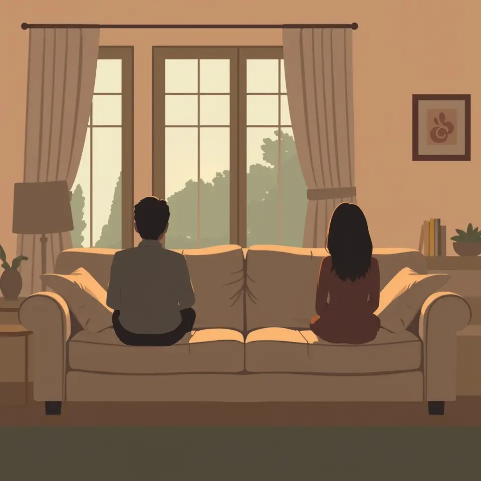

이호선 “헛소리 마요” 경고…‘이혼숙려캠프’ 숙소 발칵
이혼숙려캠프에서 캐나다 부부의 갈등이 격해지며 이호선의 경고가 나와 출연자 사이에 긴장이 높아졌다.

핵심 정리
- 캐나다 부부 남편, 아내의 남사친을 두고 비난
- 이호선 경고로 숙소 분위기 격앙
- 기준부부 남편의 이혼 참겠다는 발언이 화제
예능 프로그램 이혼숙려캠프에서 캐나다 부부의 갈등이 다시 불거지며 숙소 분위기가 격앙됐다. 이호선이 헛소리 하지 말라며 경고하는 장면이 나왔다.
남편은 아내의 남사인 관계를 두고 재수 없다며 비난했고, 여자가 예쁘면 남사친을 둘 수 없다는 보수적인 태도를 보였다는 내용이 보도됐다. 다른 부부의 사례에서는 남편의 이혼을 참겠다는 발언과 딸의 그림이 충격을 준 장면도 소개됐다.
매체마다 주목한 장면은 달랐다. 일부 매체는 캐나다 부부의 남녀 관계 인식 차이를 중심으로 전했고, 다른 보도는 출연자 발언의 파장과 방송 속 갈등 수위를 짚었다.
프로그램은 부부 갈등을 상담으로 풀어가는 형식이어서, 이후 회차에서 갈등이 어떻게 정리될지가 시청자의 관심을 모을 전망이다.
이 소식을 다룬 보도